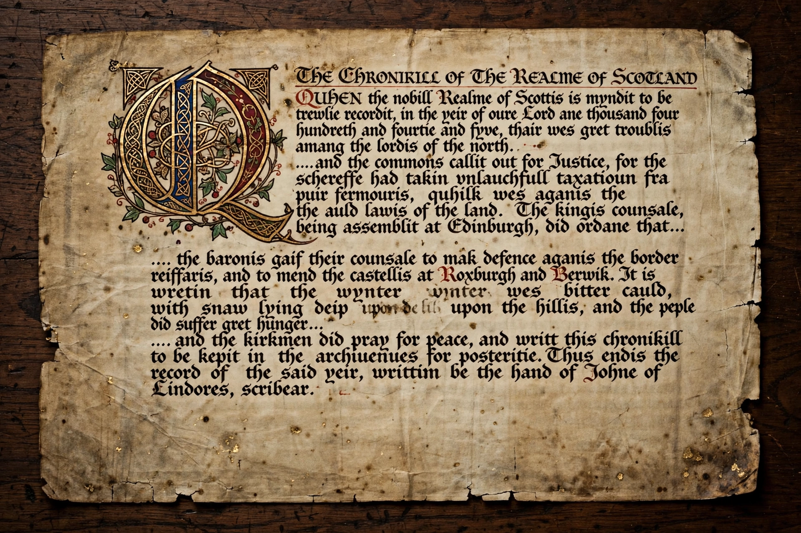

Middle Scots
Middle Scots was the Anglic language of Lowland Scotland in the period from 1450 to 1700. By the end of the 15th century, its phonology, orthography, accidence, syntax and lexis had diverged markedly from that of Early Middle English, which it derived from, and it became largely mutually unintelligible with the variety spoken in England. Middle Scots was the literary language of Scotland and the language of the royal court of the Stewart kings, producing a rich body of literature known as the work of the Makars.

| Middle Scots | |
|---|---|
| Region | Lowland Scotland |
| Era | c. 1450 – 1700 |
| Family | Indo-European → Germanic → West Germanic → Anglic |
| Earlier form | Early Scots |
| Later form | Modern Scots |
History
Middle Scots developed from Early Scots (before c. 1450), which had been known in Latin documents as Scottis and in the language itself as Inglis. During the Middle Scots period the language increasingly distinguished itself from the English of England, partly through the effects of the Great Vowel Shift, which proceeded differently in the north, and partly through the influence of French, Latin, Gaelic and Dutch vocabulary. In 1494 the term Scottis first appears applied to the language in an official context, reflecting a growing sense of a distinct national tongue.
Literature
The period produced the great age of Scots poetry. The Makars — including Robert Henryson, William Dunbar, Gavin Douglas and David Lyndsay — wrote allegories, fables, romances and satires in a highly wrought literary Scots. Douglas's Eneados (1513) was the first complete translation of Virgil's Aeneid into an Anglic language. King James V and later James VI were themselves poets; James VI's treatise Reulis and Cautelis (1584) codified the practice of Scots verse.
Decline
After the Union of the Crowns in 1603, the court moved to London, and Scots ceased to be the language of royal patronage. The availability of the King James Bible only in English accelerated the anglicisation of written Scots in religious contexts. By the Union of Parliaments in 1707, formal written Scots had largely given way to English, though Scots continued to be spoken and would re-emerge in the vernacular revival of the 18th century associated with Allan Ramsay, Robert Fergusson and Robert Burns.
Orthography
Middle Scots spelling was never fully standardised but showed characteristic conventions, including the use of quh- for English wh- (as in quha, "who"), -is plural and genitive endings, and the past tense ending -it. The yogh (ȝ) and thorn (þ) survived in printing in modified forms, with yogh often rendered as z.